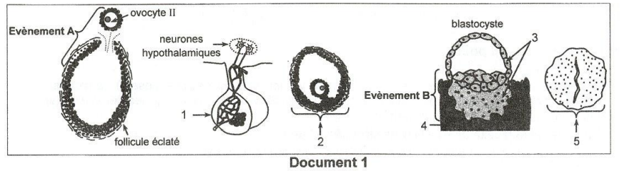
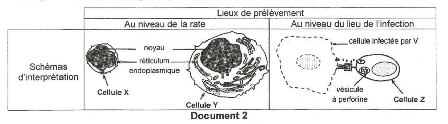
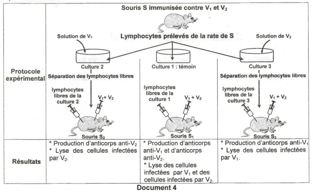
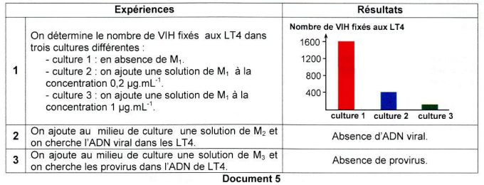
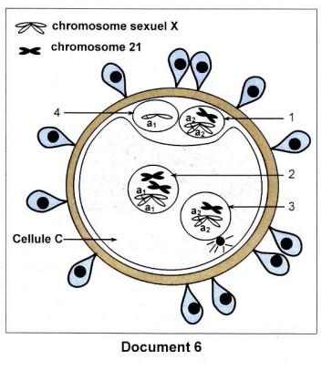

Sciences de la Vie
et de la Terre
Session Principale 2019 — Épreuve officielle simulée
Clique sur chaque verbe pour comprendre ce qu'attend le correcteur.
⚠️ Décrire sans interpréter = 0 pt.
⚠️ Nommer sans expliquer = incomplet.
⚠️ Affirmer sans justifier = non recevable.
⚠️ Rédiger un paragraphe entier = perte de temps.
⚠️ Ignorer les documents = hors sujet.
⚠️ Pas de légende = 0 pt.
Ce que tu dois savoir
Notions ciblées pour cette épreuve uniquement
Ovulation (événement A) : Le follicule mûr sécrète un pic d'œstrogènes qui exerce un rétrocontrôle positif sur l'axe hypothalamo-hypophysaire, entraînant un pic de LH et de FSH. Ce pic déclenche l'éclatement du follicule et la libération de l'ovocyte II.
Nidation (événement B) : Après la fécondation, le blastocyste se fixe dans la muqueuse utérine. Le trophoblaste sécrète l'HCG qui maintient le fonctionnement du corps jaune. Celui-ci sécrète les œstrogènes et la progestérone nécessaires au maintien de la muqueuse utérine.
التبويض (الحدث A) : يُفرز الجريب الناضج ذروة من الإستروجين التي تمارس تغذية راجعة إيجابية على المحور الوطائي-النخامي، مما يؤدي إلى ذروة LH و FSH التي تحفز التبويض.
الانغراس (الحدث B) : بعد الإخصاب، تثبت الأرومة الغاذية في بطانة الرحم وتفرز HCG التي تحافظ على عمل الجسم الأصفر الذي يفرز الإستروجين والبروجسترون الضروريين لبقاء بطانة الرحم.
Réponse immunitaire à médiation humorale (RIMH) : Cette réponse fait intervenir les lymphocytes B (LB) qui maturent dans la moelle osseuse. Lors de l'infection, ils se différencient en plasmocytes qui sécrètent des anticorps spécifiques au virus.
Réponse immunitaire à médiation cellulaire (RIMC) : Cette réponse fait intervenir les lymphocytes T cytotoxiques (LTc). Ils reconnaissent les cellules infectées grâce au CMH I associé aux peptides viraux, puis libèrent des perforines qui créent des pores dans la membrane de la cellule cible → lyse cellulaire.
Spécificité : Chaque lymphocyte ne reconnaît qu'un seul antigène (via son TCR ou ses immunoglobulines de surface). Cette propriété est démontrée par l'expérience 3 où des lymphocytes spécifiques à un virus ne réagissent pas à un autre virus.
الاستجابة المناعية الخلطية (RIMH) تشمل الخلايا الليمفاوية B التي تنضج في نخاع العظم وتتحول إلى بلازميات تفرز أجساماً مضادة. الاستجابة المناعية الخلوية (RIMC) تشمل الخلايا الليمفاوية T السامة (LTc) التي تقتل الخلايا المصابة عبر البيرفورين. تتميز الاستجابتان بالنوعية (كل خلية تتعرف على مستضد واحد).
Étapes du cycle du VIH :
- Fixation : Le VIH se fixe sur le LT4 via ses protéines d'enveloppe.
- Entrée : Le virus introduit son ARN viral et sa transcriptase réverse dans le cytoplasme.
- Transcription inverse : L'ARN viral est transcrit en ADNc (simple brin) puis en ADN double brin (provirus).
- Intégration : Le provirus s'intègre dans l'ADN du LT4 (action du raltégravir → M3).
- Multiplication : L'ADN viral est transcrit en ARNm, traduit en protéines virales → assemblage → bourgeonnement.
دورة فيروس نقص المناعة البشرية (VIH) تشمل : التثبيت على الخلايا الليمفاوية T4، إدخال ARN الفيروسي والنسخ العكسي، تحويل ARN إلى ADN (النسخ العكسي)، اندماج ADN الفيروسي في ADN الخلية المضيفة (M3 يثبط هذه المرحلة)، ثم التكاثر والتحرير.
Trisomie 21 : Anomalie chromosomique due à la présence de trois exemplaires du chromosome 21 (au lieu de deux). Dans le document 6, la non-disjonction des chromatides du chromosome 21 au cours de l'anaphase II de l'ovogenèse est à l'origine de cette anomalie.
Transmission liée à l'X : Le gène responsable de l'anomalie génique est porté par le chromosome X. Le fœtus (sexe féminin) a un génotype Xa1Xa2 où a1 est l'allèle muté et a2 l'allèle sain. La maladie est récessive : elle ne s'exprime que si les deux allèles sont mutés (Xa1Xa1).
متلازمة داون (تثلث الصبغي 21) هي اضطراب صبغي ناتج عن وجود ثلاث نسخ من الصبغي 21، وينتج عن عدم انفصال الكروماتيدات في الطور الانفصالي الثاني من انقسام البويضة. المرض الجيني المرتبط بالصبغي X ينتقل بشكل متنحي، ولا يظهر إلا إذا كان الأليلان متحورين (Xa1Xa1).
Ministère de l'Éducation
EXAMEN DU BACCALAURÉAT
Pour chacun des items suivants (de 1 à 8), il peut y avoir une (ou deux) réponse(s) correcte(s). Reportez sur votre copie le numéro de chaque item et indiquez dans chaque cas la (ou les deux) lettre(s) correspondant à la (ou aux deux) réponse(s) correcte(s).
NB : toute réponse fausse annule la note attribuée à l'item.

doc1_reproduction.png
- qui sont responsables du déclenchement de l'évènement A.
- qui maintiennent l'évènement B.

doc2_immunite_cellules.png
- d'identifier les cellules X, Y et Z.
- de dégager la (ou les) nature(s) de la (ou des) réaction(s) immunitaire(s) dirigée(s) contre le virus V.

doc4_cultures_immunite.png
- d'identifier les lymphocytes libres dans les cultures 2 et 3.
- de déduire une propriété de la réponse immunitaire.

doc5_vih_molecules.png

doc6_fécondation.png
a- premier cas : la mère est atteinte.
b- deuxième cas : la mère est saine.